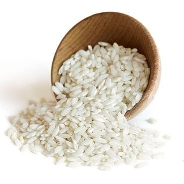
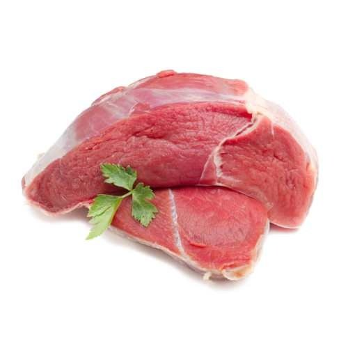
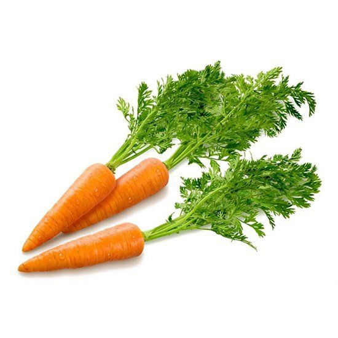
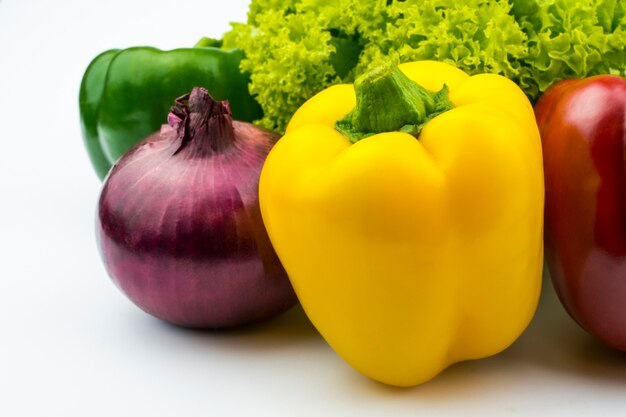

Ингридиенты для плова
Рис
- Рис- самый главный ингридиент для плова;

Мясо
- Мясо- один из основных ингридиентов блюда;
- Плов будет вкусным если добавить мясо;

Морковь
- Плов невозможно приготовить без моркови;
- Морковь не нужно жалеть для плова, чем больше моркови, тем вкуснее;

Лук и болгарский перец
- Эти два овоща не видны в блюде, но они очень придают вкус для блюда

Видео-рецепт как приготовить плов